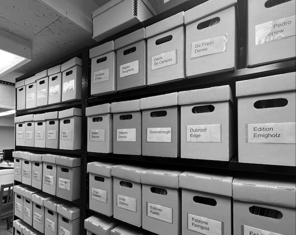

Poster Design, December 2022.
Inkjet Print / Manual Folding, 13 x 20 in.
The poster is designed for Franklin Furnace Archive's new artists' book show curated by Fang-Yu Liu and Nicole Rosengurt. The show is exhibited at Pratt Institute Brooklyn Campus. The form of the poster is inspired by the shelves that hold the archival boxes at FF.
